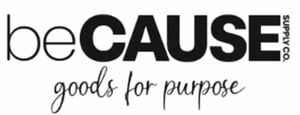

Trade Mark Journal No.2026/012 20 March 2026
WO0000001896585 (35,42)
Office of origin: United States of America
Date of International Registration:4 November 2025
Date of designation in the UK:
4 November 2025

The mark consists of the wording "BECAUSE SUPPLY CO. GOODS FOR PURPOSE" in stylized format.
Registration of this mark shall give no right to the exclusive use of the words "SUPPLY CO."
International priority date claimed: 6 May 2025
(United States of America)
(99171424)
- Class 35
- Online wholesale store services in relation to office and school supplies, namely stationery, paper, printed publications, calendars, planners, binders, clipboards, books, artists' materials, easels, dry eraseboards, poster boards, office requisites, office machinery, furniture, storage for lockers, mirrors, magnets, magnifiers, paper punches, staplers, staples, measuring instruments and apparatus, scissors, tape, adhesives, clips, fasteners, instructional and teaching materials, bags, backpacks, cleaning and polishing preparations, coin wrappers, zip pouches for bank notes, wrapping and packaging materials, envelopes, sporting apparatus and instruments, for nonprofits, schools, and disaster relief organizations; online wholesale store services in relation to holiday and party supplies, namely gift bags, wrapping paper, greetings cards, postcards, games, balloons, party favours, party hats, festive decorations, party novelties, flags, banners, party decorations, party invitations, artificial Christmas trees, Christmas crackers, confectionery, camping equipment, for nonprofits, schools, and disaster relief organizations; online wholesale store services in relation to household essentials, namely furniture, outside furniture, household utensils, household containers, kitchen utensils, kitchen containers, air fresheners, plant pots, planters, cleaning and polishing preparations, detergents, cloths, brushes, brooms, mops, buckets, baskets, bins, laundry bins and bags, pegs, lint rollers, lint removers, irons, clothes lines, clothes hangers, storage boxes, storage shelves and racks, lights, light bulbs, bedding, towels, cooking apparatus and instruments, for nonprofits, schools, and disaster relief organizations; online wholesale store services in relation to cookware, baking pans and tableware, for nonprofits, schools, and disaster relief organizations; online wholesale store services in relation to electronics, namely batteries, gaming apparatus and instruments, mouse pads, computer peripherals, mobile phones and their accessories, tablets and their accessories, computers and their accessories, mounts for electronic apparatus, smart watches and their accessories, clocks, alarms, lights, electronic sleep aids, wireless/electronic photo frames, scales, surge protectors, sanitising wands, electronic tags, hand warmers, power banks, chargers, plug extenders, extension cables, cables and plugs, wifi range extenders, smart bulbs, thermometers, office machines, photocopiers, calculators, calculating machines, telecommunications apparatus, computer printers, computer games, educational software, electronic instructional and teaching materials, for nonprofits, schools, and disaster relief organizations; online wholesale store services in relation to luggage, pet supplies, food and beverages, tools for nonprofits, schools, and disaster relief organizations; online wholesale store services in relation to hardware, namely gardening apparatus and instruments, locks and chains, work gloves, camping equipment, metal hardware, small items of metal hardware, door hardware, for nonprofits, schools, and disaster relief organizations; online wholesale store services in relation to blankets, first aid products, namely first aid kits, first aid dressings, first aid boxes sold filled, CPR responder packs, bloodborne pathogen spill clean-up kits, burn care kits, cold/hot medicated patches and packs, bio hazard clean-up kits, medical supplies, medical ointments, lotions, creams and jellies, for nonprofits, schools, and disaster relief organizations; online wholesale store services in relation to sleeping bags, umbrellas, hand warmers, for nonprofits, schools, and disaster relief organizations; online wholesale store services in relation to baby diapers and toiletries, toys and games, for nonprofits, schools, and disaster relief organizations; online wholesale store services in relation to personal care products, namely cosmetics, toiletries, soap, preparations for the skin, scalp, body, hair and nails, perfumes, make-up, cotton balls, swabs and pads, hair accessories, cosmetic bags, brushes, combs, sponges, for nonprofits, schools, and disaster relief organizations; online wholesale store services in relation to hygiene and dental kits, namely feminine hygiene products, shaving products, tooth brushes and other implements for cleaning the teeth, preparations for the care of the mouth and teeth for nonprofits, schools, and disaster relief organizations; operating an online marketplace featuring bulk wholesale general consumer merchandise for purchase by or for nonprofits, schools, and philanthropic organizations; providing an online ecommerce marketplace featuring consumer merchandise for nonprofits, schools, and disaster relief organizations sold in bulk, namely, office and school supplies, holiday and party supplies, household essentials, cookware, baking pans and tableware, electronics, luggage, pet supplies, food and beverages, tools and hardware, blankets, first aid products, clothing apparel and footwear, winter wear and accessories, baby diapers and toiletries, toys and games, personal care products, and hygiene and dental kits.
- Class 42
- Providing online non-downloadable computer software e-commerce platforms for buying and selling bulk merchandise for non-profits, schools, and disaster relief organizations.
Dollardays International, Inc.
Representative: Barker Brettell LLP, 100 Hagley Road, Edgbaston Birmingham B16 8QQ UNITED KINGDOM